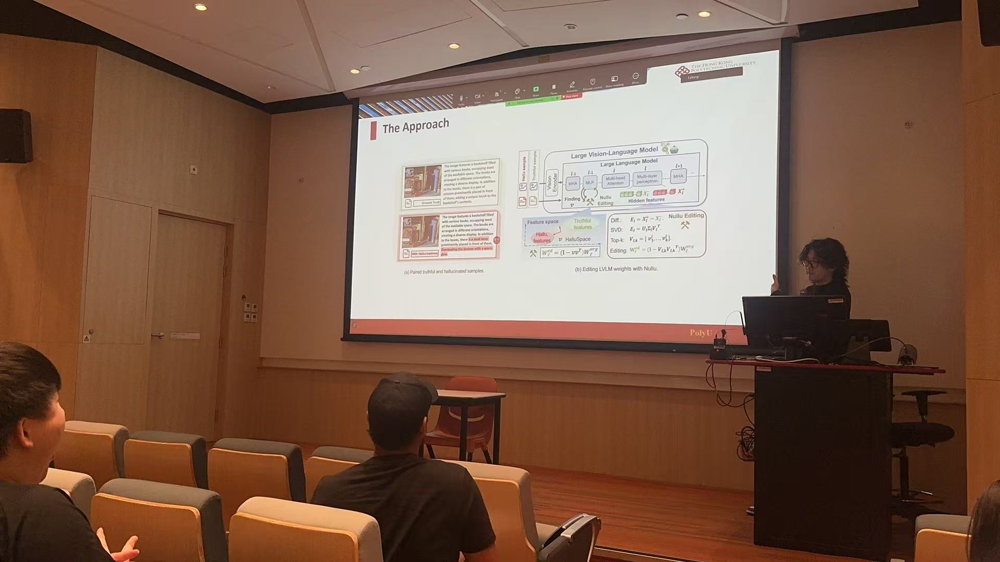

我的成长时间轴
点击节点卡片，展开我的故事
大学启航 & 编程奠基
2023.9进入大学，系统化学习C语言与Python，为未来的技术探索奠定了坚实的编程基础。

这一年，我正式踏入计算机科学的大门。通过对C语言和Python的深入学习，我不仅掌握了编程的基本范式，更培养了计算思维和解决问题的逻辑能力，这一切都成为了我后续深入AI和全栈领域的起点。
迈入AI科研 & 药物协同
2024.6加入校智能植物工厂实验室，正式投身AI科研，参与核心项目“药物协同预测系统”的研发。

这是一个重要的转折点。我开始将理论知识应用于前沿的AI医疗领域，深入研究知识嵌入、动态超图及对比学习框架，致力于通过算法解决复杂的生物医学问题。
全栈实践 & 边缘计算
2024.12参与“智云体测系统”研发与挑战杯竞赛，完整地经历了从前端到后端的开发流程，并首次接触边缘计算技术。

这次经历极大地锻炼了我的工程实践能力。我不仅熟悉了前后端分离的开发模式，还学习了如何将计算任务部署到边缘设备，为数据处理的实时性和隐私性提供了新的解决方案。
主持省级创新项目
2025.4凭借在“药物协同预测系统”项目中的积累，成功主持该项目立项为省级大学生创新创业训练计划项目。
这次经历不仅是对我技术能力的肯定，更全面锻炼了我的项目管理、团队协作和文档撰写能力。我学会了如何从0到1地规划一个项目，并带领团队向着共同的目标前进。
独立开发 & 云端部署
2025.6独立完成“个人时间胶囊系统”的开发，采用Vue+Node.js+MySQL技术栈，并成功部署至阿里云服务器。

这个项目是我技术能力的综合体现。从需求分析、数据库设计到前后端编码，再到最终的服务器运维和部署，我完整地走完了软件开发的全生命周期，积累了宝贵的独立开发经验。
赴港交流 & 学术深造
2025.7赴香港理工大学进行暑期交流学习，拓宽国际视野，并参与“编程教育”相关的综述项目论文撰写。

在国际化的学术环境中，我接触到了不同的研究范式和思维方式。参与编程教育的学术研究，让我对技术的本质和传播方式有了更深层次的思考。